- Undocumented Venezuelans find their livelihood by singling on the street.
- A soccer team finds a home away from home.
- A family’s sacrifice for their children’s health still has roadblocks.
- Children sacrifice their education to help their families.
- A mother’s effort to provide and reunite with her children.
Everyone
Photo/Video
Reporters
Interactive
Coaches
Field Producers
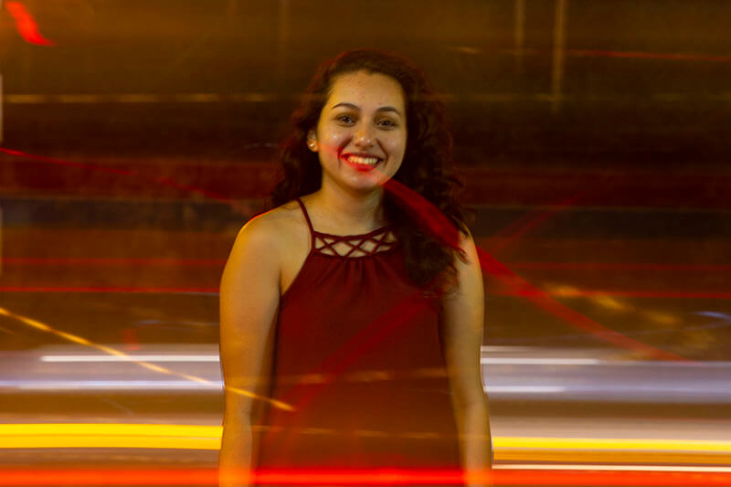
Diane Adame
Reporter
Hello! My name is Diane and I am a senior reporting and public policy student. The thought of my next meal keeps me going and if I had to describe my life in three words, it would be bylines, headlines and deadlines.
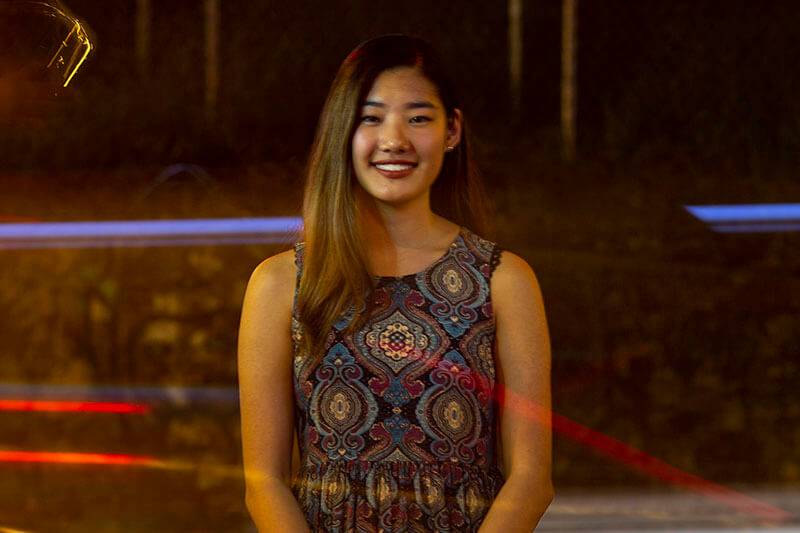
Kailyn Akers
Designer
Hello! I'm Kailee and a senior MEJO major. Design is my ish. If I had a time machine, I would've done the "tiny kitchen" videos first.

Jason Armond
Videographer
Hello, I'm Jason Armond a senior studying media and journalism, with an emphasis in photo and video journalism and graphic design. Creating compelling visual content that is engaging and rooted in storytelling is what drives me. Fun fact about me is I have never had a pet. When I finally get a pet, it will be an English Bulldog.
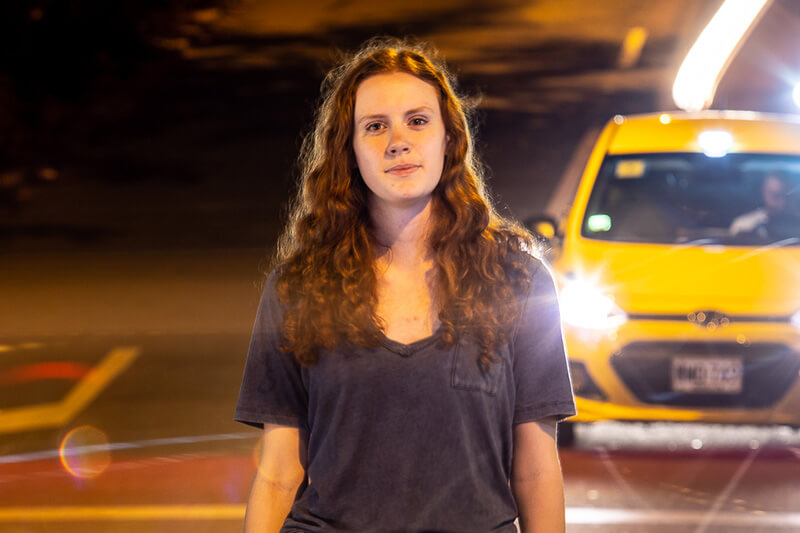
Abby Cantrell
Videographer
I'm Abby, a junior journalism and politcal science double major. I love dogs, naps and pizza.

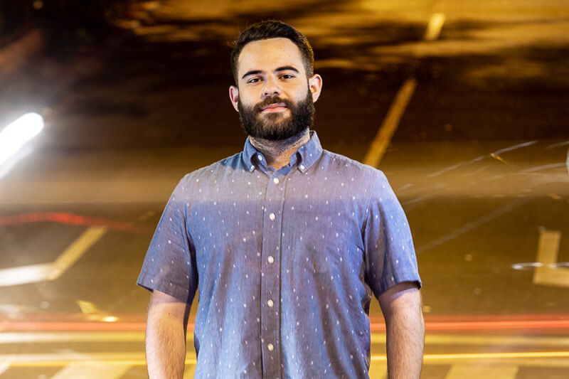
Bryan Cereijo
Videographer
I'm Bryan Cereijo, a visual communications graduate student. I am a Cuban-American visual storyteller from Miami, FL. I am specifically interested in narratives that relate to sports and culture.
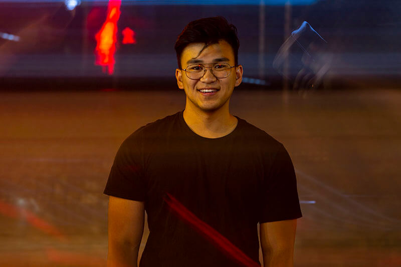
Nash Consing
Photographer
I'm a sophomore MEJO and communications double major, Frank Ocean stan and a cuddler of all dogs. Shout out to my goodboys Xavier, Yoda and Jerome.
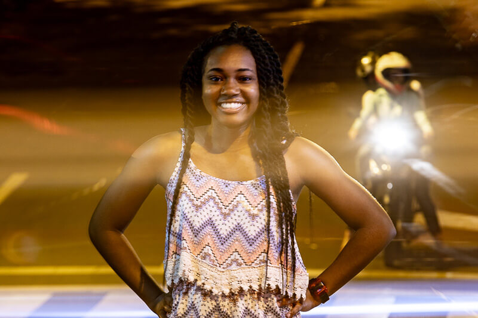

Landon Cooper
Videographer
Hey everybody, I'm Landon and I'm a photographer and videographer. I have no children but I'm sublime at dad jokes. I love long walks on the beach, taking portraits and telling stories.
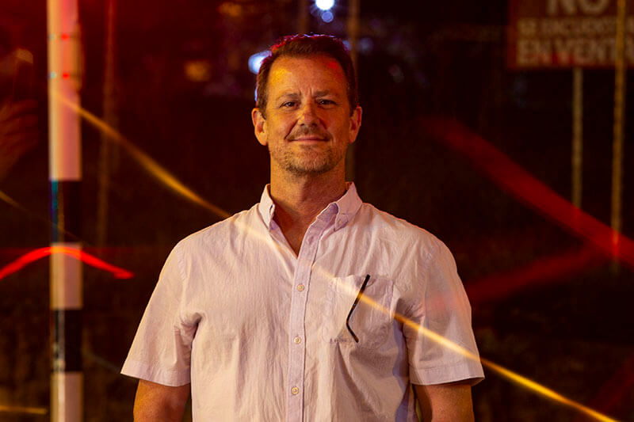
Paul Cuadros
Reporting Coach
I am an associate professor, investigative reporter and author with a focus on issues of race and poverty in America. I love fútbol and storytelling.

Sally Dillon
Designer
I'm Sally, a graphic design and French major. I'm a senior but more of a senior citizen at heart. I am a paper hoarder and my favorite color is butter yellow.
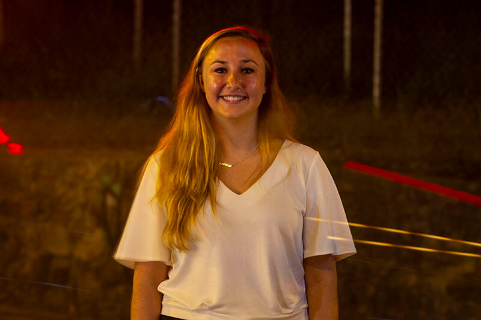
Catie Dull
Photographer
I'm Catie, a senior photo & video journalist. I love my fat cat and my home at Wrightsville Beach. I'm a weirdo who loves to travel with my camera around my neck!
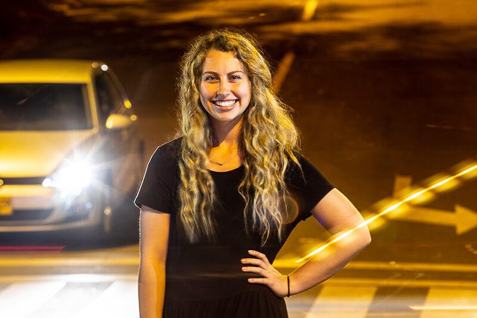
Ashton Eleazer
Videographer
I'm Ashton, studying photo and video journalism and dramatic art. I love taking analog photographs, journaling for my future memoir and going on spontaneous trips everywhere from the local farmer's market to the Himalayas.
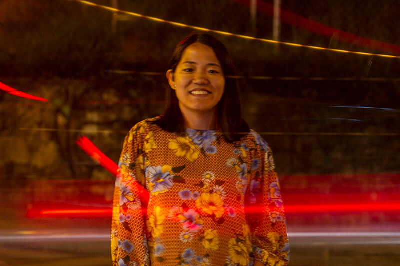
Brooke Fisher
Lead Developer
I’m Brooke, senior interactive multimedia major. When I’m not coding, you can find me writing, cooking or cheering on the UNC basketball team from the band section.

Haley France
Videographer
My name is Haley, and I'm studying media and journalism with a social and economic justice minor. I love DJ-ing on our student radio station and am a pro at making annoying puns.

Tenley Garrett
Videographer
I'm a senior visual communication major who believes everyone should take time off from school before graduating. Seriously. Just do it. I enjoy solo trips to concerts, napping in the middle of the day and being vulnerable with people.

Xiaoke Ji
Designer
I'm Xiaoke, a senior media design student. My nickname is Arya because she's my alter ego in Game of Thrones and also because only Mandarin-speaking people know how to pronouce my name. My favorite job field is animation & game design.
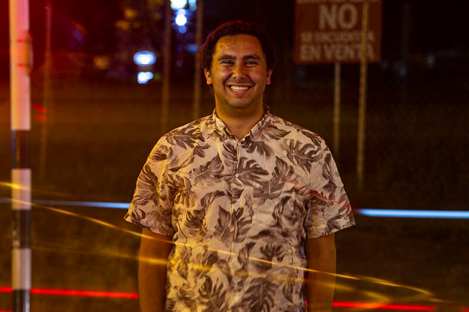
Alex Kormann
Lead Photographer
Hey! I'm Alex, a senior photojournalism major and history minor from New Jersey. I love Star Wars, spicy food and dogs. All my work is in memory of my father, Russ.

Lyric Lin
Designer
Hi! I'm Lyric, a junior advertising and public relations major. I consider myself a “Type A Granola”: Free-spirited but on a schedule. Lover of pups, the color yellow, and cotton candy sunsets.

Patty Matos
PR Coordinator, Translator
I'm Patty, a senior public relations and social and economic justice student from Caracas, Venezuela. I'm the team's resident tuitera, a relentless Scorpio, and an avid lover of pop music. Bring me crunchy snacks, please.

Patsy Montesinos
Reporter
I'm Patsy, the girl who straddles the borders but also loves the mix of her culturas. I am a media and journalism major with a minor in Latino/a studies. Painter, dancer, soccer player and Rayo's (AKA my horse) mom.

Peggy Mullin
Videographer
Hey! I'm Peggy, a senior environmental science and photo/video nerd. I geek out over many things, including (but not limited to) algae, music, dogs, and the unbelievable power of storytelling.
")
Sara Pequeño
Reporter
My name is Sara and I'm a senior reporting and political science student. Yes, my last name does mean "small" in Spanish. Yes, I am 4'11".

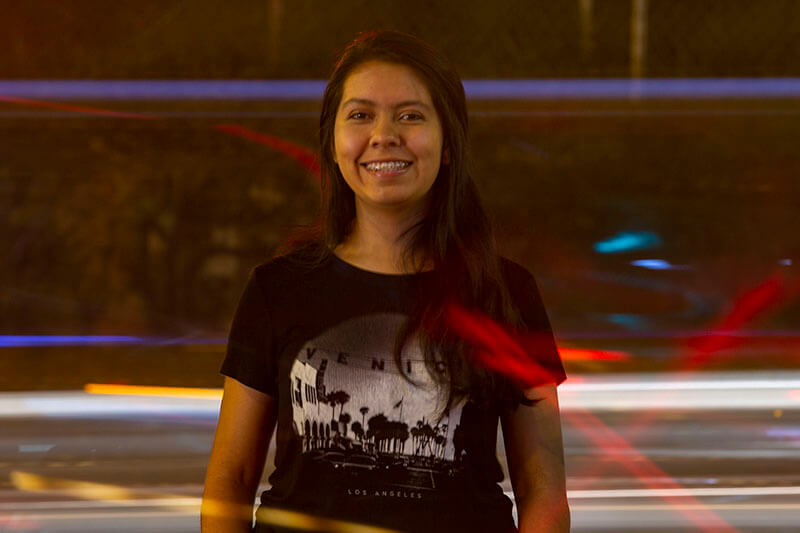
Zayrha Rodriguez
Videographer, Translator
I was born in Bogotá, Colombia, and when I was 14 I moved to Miami. I'm currently a junior photo and video journalism major with a history minor. In my free time, I like to dance with Que Rico, pet all the doggos and eat papitas.
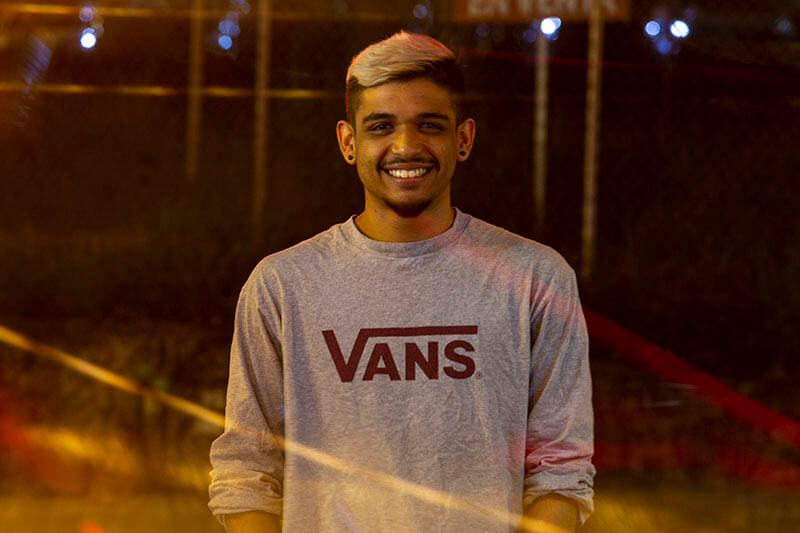
Carlos Salas
Lead Designer, Translator
Hi I'm Carlos. I'm a UX/UI designer born in San Cristóbal, Venezuela and raised in North Carolina. When I'm not making cool things for the interwebs I'm probably just cuddling with my dog, Jagger. My role model is Danny Phantom.
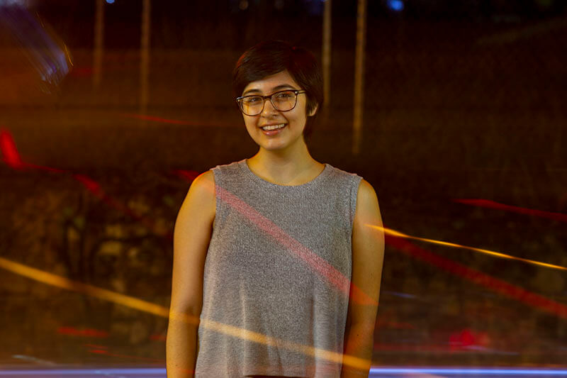
Amy Townsend
Developer
I'm Amy, a front-end web developer studying interactive multimedia and information science. Dancer, singer and lover of puzzles/games, blankets, my cat and Avatar: The Last Airbender.

Maria Elena Vizcaino
Reporter, Translator
I am a journalist born and raised in Caracas, Venezuela. Sophomore year of high school I moved to Miami, Florida, and now I’ve traded the beach and the heat for the mountains and the chilly breeze of North Carolina. If I'm not asking questions, find me eating arepas or compulsively cleaning my house.

Andie Rea
Videographer
I am a visual media creator inspired by the power of story to shape ideas and create change. I enjoy adventures with my family and trying new foods.
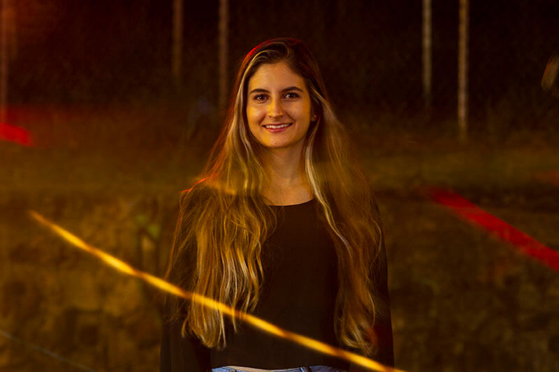

Martin Villaneda Gomez
Field Producer
I'm Martín Villaneda, Colombian student of journalism at Universidad Pontificia Bolivariana in Medellín and a photojournalist. I speak four languages: English, French, Italian and Spanish, my native language. I'm 20 years old, and someday I'll win a World Press Photography award.

Juan David Ochoa Jiménez
Field Producer
Hey there! I'm Juan, a social communication student. I'm 20 years old and I'm a politics and history lover. I have three beautiful and fluffy cats (if I had a bigger house, I would have more!) I like to learn about EVERYTHING, that's why I enjoy meeting people from other countries. I also like dance, play video games and walk through the city.
")
Laura Trujillo Arango
Field Producer
My name is Laura, I'm a first year social comunication and journalism student at UPB. I really love dogs and I'm 18 yers old (until April, at least). Apart from English and Spanish, I also speak Portuguese. I really love and enjoy writing, reading and learning new things on a daily basis.
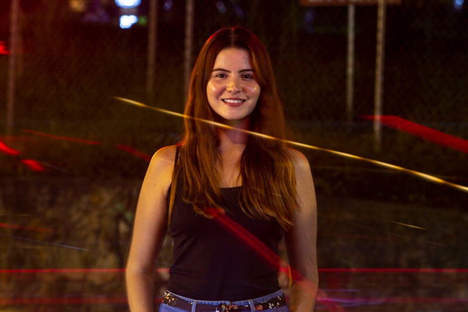
María Alejandra Cardona Aizpurua
Field Producer